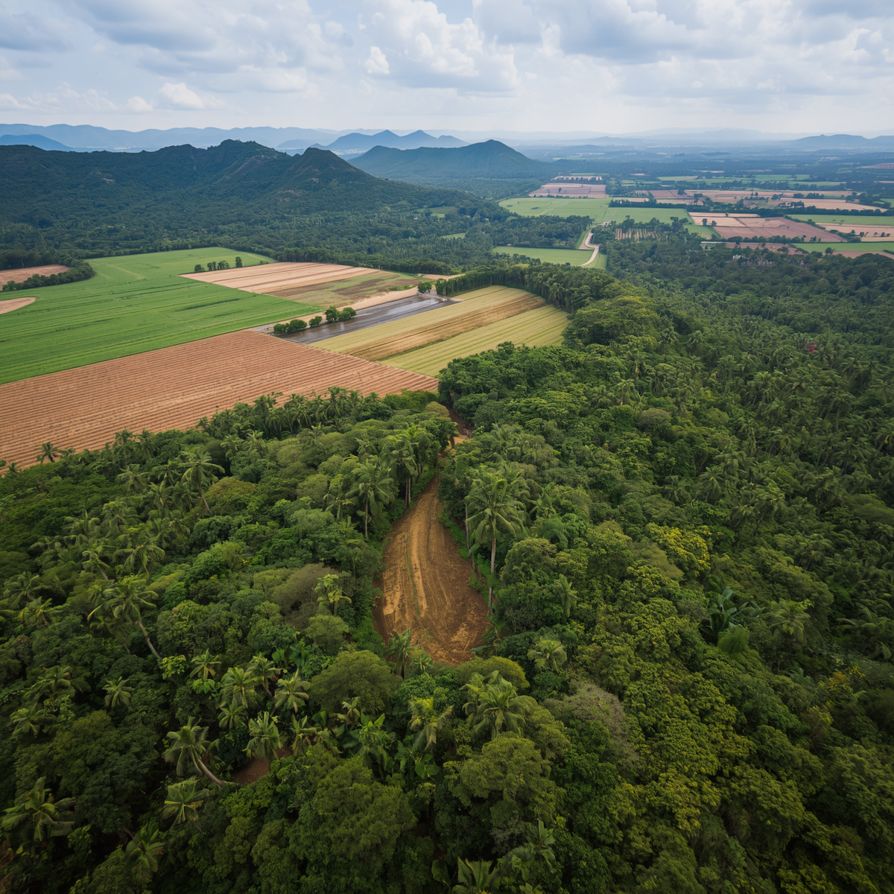

A agricultura sustentável ganha espaço no debate global em um momento de pressão sobre custos, segurança alimentar, energia e mudanças climáticas. Segundo Luciana Gorab, especialista em Planejamento Estratégico de Vendas, esse cenário coloca o Brasil em posição de destaque por unir produtividade, inovação e capacidade de adaptação no campo.

Enquanto temas como inteligência artificial, guerras comerciais e a nova corrida energética dominam parte das discussões internacionais, uma transformação menos ruidosa vem fortalecendo o papel brasileiro na inovação agrícola. O avanço de tecnologias baseadas no uso de microrganismos nas lavouras mostra como o país pode contribuir para reduzir a dependência de fertilizantes químicos, um dos insumos mais caros e sensíveis da produção de alimentos.
O trabalho da microbiologista brasileira Mariangela Hungria ganhou projeção internacional após décadas dedicadas ao desenvolvimento de bactérias capazes de substituir parte dos fertilizantes industriais. Na prática, esses microrganismos capturam nitrogênio diretamente do ar e o transferem para as plantas, ampliando a eficiência produtiva e reduzindo a necessidade de insumos nitrogenados.
Esse ponto tem peso estratégico. Fertilizantes nitrogenados dependem fortemente de gás natural, recurso sujeito a oscilações de preço, tensões geopolíticas e aumento dos custos energéticos. Nesse contexto, a tecnologia brasileira passa a ser vista como uma alternativa que combina ganhos de produtividade, sustentabilidade, redução de custos e aplicação tropical em escala global.
O reconhecimento internacional veio com o World Food Prize, frequentemente chamado de Nobel da Agricultura. Mais do que uma premiação, o destaque reforça uma mudança de percepção sobre o Brasil, que deixa de ser visto apenas como exportador de commodities e passa a ocupar espaço como protagonista em tecnologia agrícola sustentável. “Num planeta preocupado com segurança alimentar, inflação e mudanças climáticas, talvez uma das soluções mais sofisticadas do século esteja justamente onde o Brasil sempre foi forte: no campo. Porque, às vezes, o verdadeiro ouro não está no solo. Está na inteligência de quem aprende a trabalhar com ele”, conclui.
Quais os principais benefícios da Inteligência Artificial no campo?
A agricultura está passando por diversas transformações à medida que vai se modernizando e adotando inovações tecnológicas. A Inteligência Artificial (IA) faz parte desse movimento e promete revolucionar o setor. Ela permite a otimização do uso de recursos no campo, além de permitir a automatização de processos complexos, contribuindo para o aumento da eficiência, produtividade e sustentabilidade das operações.

Sabemos que atualmente, a agricultura enfrenta inúmeros desafios e entre eles estão lidar com recursos naturais finitos, mudanças climáticas e a necessidade de aumentar a capacidade produtiva. Devido a isso, contar com inovações como a Inteligência Artificial é uma peça-chave para se destacar nesse mercado e continuar expandindo os negócios. Diante desses desafios, a necessidade de inovações tecnológicas na agricultura nunca foi tão urgente.
Quais os benefícios de usar IA no campo?
A IA está desempenhando um papel crucial na modernização das práticas agrícolas, trazendo avanços significativos. Clique nos blocos abaixo para expandir a explicação de cada benefício:
Um dos principais benefícios da IA no campo é a possibilidade de economizar a utilização de recursos naturais. É possível contar com sistemas de irrigação inteligentes, sensores e sistemas que monitoram constantemente as condições do solo e das plantas, ajustando a irrigação de acordo com a necessidade real das culturas, o que reduz o desperdício de água e melhora a saúde das plantas. Além disso, é possível realizar análises de dados capturados por sistemas de IA para verificar a composição do solo, as necessidades específicas da cultura, entre outras características que ajudam na otimização de recursos.